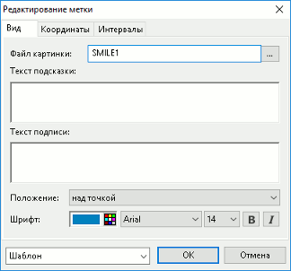

Настройка пользовательских меток
Подробнее об отображении меток на графике см. «Отображение меток на графике».
Окно «Редактирование метки» открывается одним из следующих способов:
- Для создания новой метки – выбором типа метки в контекстном меню «Метка…» на нужной области построения графиков и нажатием левой кнопкой мыши на месте привязки метки на графике (опорная точка метки).
- Для редактирования существующей метки:
- выбором пункта контекстного меню «Редактировать…» на нужной метке;
- двойным нажатием левой кнопки мыши на нужной метке.
Окно «Редактирование метки» содержит следующие параметры:
- По умолчанию используются значения параметров, заданные при создании предыдущей метки.
Вкладка «Вид»
- Метка «Текст»:
- Настройки текста метки: цвет, шрифт, размер, начертание.
- Поле для ввода текста метки.
- «Граница» – включение отображения границы метки и настройка цвета и толщины линии границы.
- «Заливка» – включение использования заливки для фона метки и настройка цвета заливки.
- Метка «Заметка»:
- «Текст подсказки» – текст подсказки, отображаемой при наведении курсора мыши на метку.
- «Цвет 1» – основной цвет метки.
- «Цвет 2» – цвет внутренней части метки.
- Метка «Выноска»:
- Настройки текста метки: цвет, шрифт, размер, начертание.
- Поле для ввода текста метки.
- «Граница» – настройка цвета и толщины линии границы.
- «Заливка» – настройка цвета заливки фона.
- Метка «Отметка цены»:
- «Шрифт» – настройки текста метки: цвет, шрифт, размер, начертание.
- «Граница» – настройка цвета и толщины линии границы.
- «Заливка» – настройка цвета заливки фона.
- Метка «Картинка из файла»:

- «Файл картинки» – выбор файла с изображением. Возможные форматы файла: *.bmp, *.jpeg.
- «Текст подсказки» – текст подсказки, отображаемой при наведении курсора мыши на метку.
- «Текст подписи» – текст, который отображается рядом с картинкой.
- «Положение» – размещение метки на графике относительно опорной точки:
- «слева от точки»;
- «справа от точки»;
- «над точкой»;
- «под точкой».
- «Шрифт» – настройки текста метки: цвет, шрифт, размер, начертание.
- Метка «Значок»:
- «Текст подсказки» – текст подсказки, отображаемой при наведении курсора мыши на метку.
- «Цвет» – цвет метки.
Вкладка «Координаты»
- «Перемещать со шкалой времени» – привязать метку к шкале времени на графике.
- «Перемещать со шкалой цены» – привязать метку к шкале цены на графике:
- «Правой» – привязать метку к правой шкале цены;
- «Левой» – привязать метку к левой шкале цены.
- «Точка 1» – координаты опорной точки метки:
- «Цена» – значение по вертикальной оси координат. Доступно для редактирования при включенном признаке «Перемещать со шкалой цены».
- «№ интервала» – номер интервала, в котором расположена опорная точка.
- «Дата и Время» – дата и время начала интервала, в котором расположена опорная точка. Если точка попадает на интервал времени в будущем, то в поле отображается количество интервалов сдвига в будущее со знаком «+» (плюс). Недоступно для редактирования.
- «Точка 2» – координаты второй опорной точки метки (точка привязки выноски с текстом). Отображается для меток вида «Выноска», «Отметка цены».
- «Цена» – значение по вертикальной оси координат. Доступно для редактирования при включенном признаке «Перемещать со шкалой цены».
- «№ интервала» – номер интервала, в котором расположена опорная точка.
- «Дата и Время» – дата и время начала интервала, в котором расположена опорная точка. Если точка попадает на интервал времени в будущем, то в поле отображается количество интервалов сдвига в будущее со знаком «+» (плюс). Недоступно для редактирования.
Вкладка «Интервалы»
На вкладке выполняется настройка видимости метки на разных длинах интервалов. Возможные значения:
- «Тиковый»;
- «Минуты» (от 1 до 6, 10, 15, 20, 30);
- «Часы» (1, 2, 4);
- «Дневной»;
- «Недельный»;
- «Месячный».
Шаблон
Настройка используемого шаблона метки:
- «По умолчанию» – применить к метке настройки по умолчанию.
- «Сохранить как…» – сохранить настройки метки в шаблон. В открывшемся диалоге задаётся наименование шаблона.
- <Название шаблона> – применить к метке сохраненные в выбранном шаблоне настройки. Для удаления шаблона из списка используйте кнопку «Х» в строке с названием шаблона.
См. также:
Отображение меток на графике